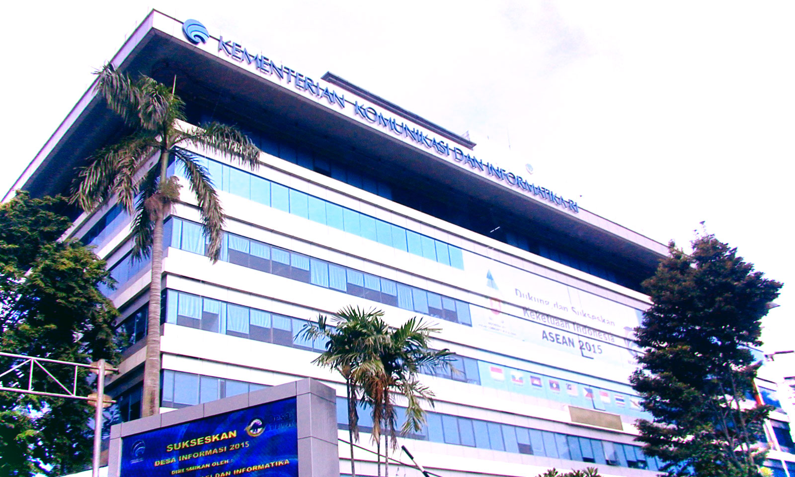

25
MEI
2015
Siaran Pers Tentang Pengumuman Enam Calon Anggota KRT-BRTI Periode 2015-2018 Terpilih dari Unsur Masyarakat Berdasarkan Hasil Seleksi
Dengan berakhirnya masa kerja anggota Komite Regulasi Telekomunikasi pada Badan Regulasi Telekomunikasi Indonesia (KRT-BRTI) Periode 2012-2015 maka Kementerian Komunikasi dan Informatika telah membentuk Panitia Seleksi Calon Anggota KRT-BRTI Periode 2015-2108 melalui Keputusan Menteri Kominfo Nomor 79 Tahun 2015 yang diketuai oleh Basuki Yusuf Iskandar, Kepala Badan Penelitian dan Pengembangan SDM Kemkominfo. Pembentukan Panitia Seleksi sesuai dengan amanat dalam Pasal 10 Peraturan Menteri Kominfo Nomor:36/PER/M.KOMINFO/10/2008 tentang Penetapan Badan Regulasi Telekomunikasi Indonesia yang telah diubah terakhir dengan Peraturan Menteri Kominfo Nomor: 01/PER/M.KOMINFO/02/2011, yang menyatakan bahwa KRT-BRTI berjumlah 9 (sembilan) orang yang terdiri dari 6 (enam) orang dari unsur masyarakat dan 3 (tiga) orang dari unsur pemerintah. Penetapan anggota komite yang berasal dari unsur masyarakat dilaksanakan dengan mekanisme seleksi.
Proses seleksi calon anggota KRT-BRTI Periode 2015-2018 dari unsur masyarakat adalah sebagai berikut:
- Dimulai dengan pendaftaran secara online pada tanggal 24 Februari 2015 sampai dengan 13 Maret 2015. Pengumuman pendaftaran dilakukan secara terbuka baik melalui web kominfo.go.id maupun melalui beberapa media cetak nasional.
- Untuk memberikan kesempatan yang lebih luas kepada para pakar atau profesional di bidang telekomunikasi/ teknologi informasi komunikasi, hukum, ekonomi, dan kebijakan publik terutama yang berasal dari luar pulau Jawa untuk mendaftar sebagai calon anggota KRT-BRTI Periode 2015-2018 maka masa pendaftaran ini diperpanjang sampai tanggal 20 Maret 2015. Jumlah pendaftar sampai akhir penutupan pendaftaran berjumlah 149 (seratus empat puluh sembilan) peserta.
- Dari 149 (seratus empat puluh sembilan) peserta yang mendaftar, sebanyak 72 (tujuh puluh dua) peserta dinyatakan lulus tahapan administrasi yang diumumkan pada tanggal 23 Maret 2015.
- Pada tanggal 26 Maret 2015 dilakukan Tes Potensi Akademik (TPA) terhadap 64 (enam puluh empat) peserta yang hadir dari 72 (tujuh puluh dua) peserta yang diumumkan.
- Panitia Seleksi kemudian pada tanggal 2 April 2015 mengumumkan 36 (tiga puluh enam) peserta yang lulus seleksi Tes Potensi Akademik (TPA).
- Pada tanggal 7 April s.d. 8 April 2015 dilakukan tes asesmen terhadap 34 (tiga puluh empat) peserta yang hadir dari 36 (tiga puluh enam) peserta yang diumumkan.
- Kemudian dilanjutkan dengan tahapan penulisan karya tulis dan wawancara dengan Tim Penilai yang dilaksanakan pada tanggal 22 April s.d. 25 April 2015.
Dari 34 (tiga puluh empat) peserta seleksi yang telah mengikuti tahapan sebagaimana dimaksud diatas, tersaring 18 (delapan belas) nama kandidat calon anggota KRT-BRTI Periode 2015-2018. Setelah berkonsultasi dengan ahli psikologi Prof. Dr. Sarlito Wirawan Sarwono dan tim, Menteri Kominfo menetapkan 6 (enam) calon anggota KRT-BRTI Periode 2015-2018 sebagai berikut:
- Dr. Agung Harsoyo, Dosen ITB (bidang teknologi)
- I Ketut Prihadi Kresna SH, LLM, praktisi hukum dan regulasi telekomunikasi (bidang hukum)
- Dr. Muhammad Imam Nashiruddin ST,MT, PT. Indosat (bidang ekonomi mikro/bisnis)
- Rolly Rochmad Purnomo ST, MM, MSIS, PhD, dari KPPU dan Bappenas (bidang kebijakan publik)
- Dr. Rony Mamur Bishry MA, dari BPPT (bidang ekonomi makro)
- Dr. Ir. Taufik Hasan DEA, dosen Universitas Telkom dan praktisi (bidang kebijakan publik)
Keenam anggota KRT-BRTI terpilih dari unsur masyarakat nantinya akan berkerja bersama dengan 3 (tiga) anggota KRT-BRTI dari unsur pemerintah.
Melalui siaran pers ini, Kementerian Komunikasi dan Informatika dan khususnya Panitia Seleksi Calon Anggota KRT-BRTI Periode 2015-2018 dan Tim Penilai mengucapkan selamat bagi calon anggota KRT-BRTI terpilih dan kepada seluruh peserta seleksi yang telah mengikuti seluruh rangkaian tahapan seleksi, diucapkan terima kasih atas partisipasi dan kontribusinya bagi terlaksana dan suksesnya proses seleksi ini. Kiranya KRT-BRTI Periode 2015-2018 dapat menunjukkan kinerja yang baik dalam membangun sektor telekomunikasi Indonesia yang lebih baik di masa yang akan datang.
-
Rencana Kerja Pemerintah 2016, Presiden Jokowi Minta Program Jangan Terlalu Banyak Tetapi Jelas
-
Rencana Kerja Pemerintah 2016, Presiden Jokowi Minta Program Jangan Terlalu Banyak Tetapi Jelas
-
Rencana Kerja Pemerintah 2016, Presiden Jokowi Minta Program Jangan Terlalu Banyak Tetapi Jelas
-
Rencana Kerja Pemerintah 2016, Presiden Jokowi Minta Program Jangan Terlalu Banyak Tetapi Jelas
-
Rencana Kerja Pemerintah 2016, Presiden Jokowi Minta Program Jangan Terlalu Banyak Tetapi Jelas
-
Rencana Kerja Pemerintah 2016, Presiden Jokowi Minta Program Jangan Terlalu Banyak Tetapi Jelas
-
Rencana Kerja Pemerintah 2016, Presiden Jokowi Minta Program Jangan Terlalu Banyak Tetapi Jelas
-
Rencana Kerja Pemerintah 2016, Presiden Jokowi Minta Program Jangan Terlalu Banyak Tetapi Jelas
-
Rencana Kerja Pemerintah 2016, Presiden Jokowi Minta Program Jangan Terlalu Banyak Tetapi Jelas
-
Rencana Kerja Pemerintah 2016, Presiden Jokowi Minta Program Jangan Terlalu Banyak Tetapi Jelas